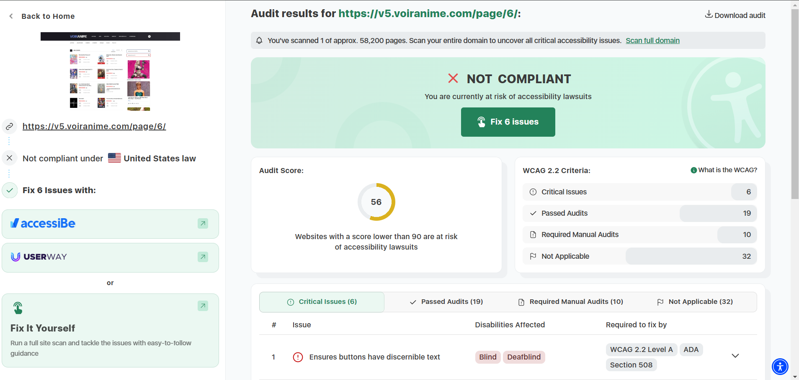
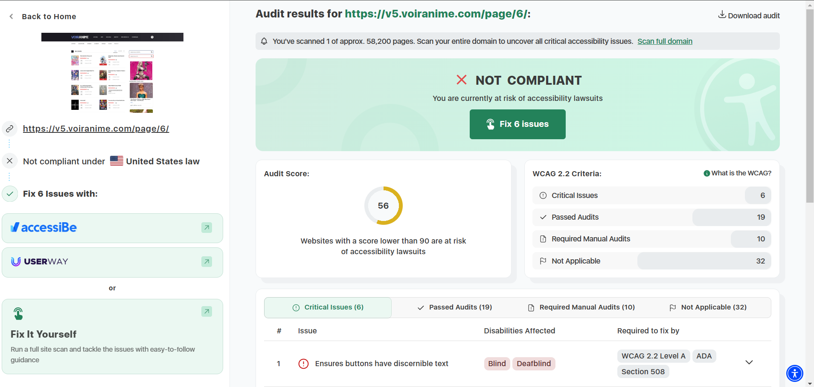

The website's name is Voiranime
The site's target audience is french speaking anime fans.
The site has a home page and many nav links in order to access other pages.
It follows the proximity design principale.All the related elements are grouped together.
For example if you were looking for thriller anime they would all be under the same section.
The score is 56
What is the site's effectiveness? Does it support users in completing actions accurately?
The website if not very effective.It does not always support users in completing actions.
What is the site's efficiency? Can users can perform tasks quickly?
It is not very effecient either.Users can not always perform tasks quickly and have to get through so many ads.
How is the engagement? Is it pleasant to use and appropriate for its industry/topic?
It is not always pleasant to use due to the pop up ads. It is not fully appropriate for its topic beacause some of the ads are not very appropiriate.
Recommendations:
The website is noy accessible to everyone . It could get improved with colors and sounds.
 
